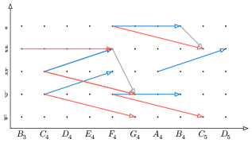
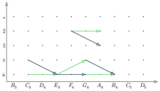
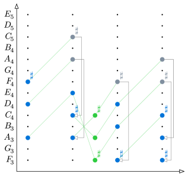

Builds Prismriver, a Lean 4 library formalizing music theory with Mathlib group actions, plus a music DSL, MusicXML export, and composition monads.
Abstract
Music theory obeys a rich set of mathematical rules and symmetries. These symmetries follow mathematical structures which can be verified and expressed in the precise language of a proof assistant. In this paper, we present Prismriver, a formalization library of music theory in Lean 4. We use Prismriver to generalize beyond existing work that assumes equal temperament tuning. We also discuss modelling counterpoint music theory with Prismriver. By formalizing music theory in Lean 4, we open the door to verifiable algorithmic composition and accompaniment generation. Prismriver also has a custom DSL integrated with MusicXML exports to interoperate with other music software. Prismriver can be used to compose music with Lean, using monadic composition primitives.
Problem
Music theory follows mathematical structures and symmetries that could be expressed and verified in a proof assistant. Existing formal treatments assume 12-tone equal temperament, and there is little support for verifiable algorithmic composition.
Approach
Prismriver is a Lean 4 library that models pitches, accidentals, scales, chords, durations and parts. Scales are represented as torsors under abelian interval groups, using Mathlib group actions. This setup supports xenharmonic and non-equally tempered tunings, and properties can be provably reduced to 12-TET. The library also provides a LilyPond-like DSL, playback via Alda, MusicXML export, and a CompositionT monad for algorithmic composition, including first-species counterpoint with proofs about its properties.

Figure 1. Action of augmented fourth i_{\mathsf{A4}} and diminished fifth i_{\mathsf{D5}} on classical pitches. The combination of them produces a diminished second , which relates enharmonic notes.

Figure 2. Lattice formed by major third i_{\mathsf{M3}} and minor third i_{\mathsf{m3}}
Results
The library generalizes music formalization beyond equal temperament. It analyzes musical structures such as enharmonic intervals and the chord progression of Pachelbel's Canon via transpose actions. Example compositions and counterpoint proofs are given, and the library interoperates with external music software.

Figure 3. Chord progression of Pachelbel, Canon in D, analyzed in terms of transpose actions